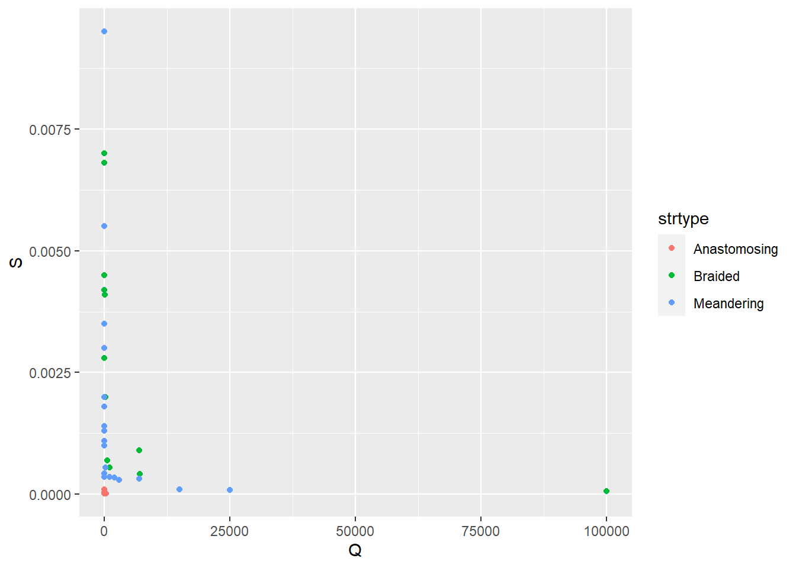
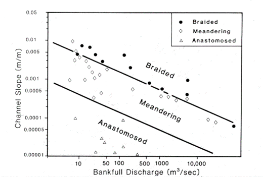
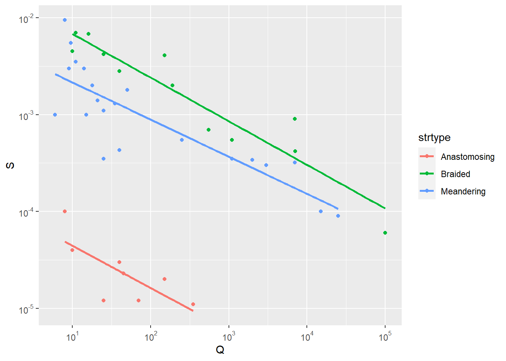
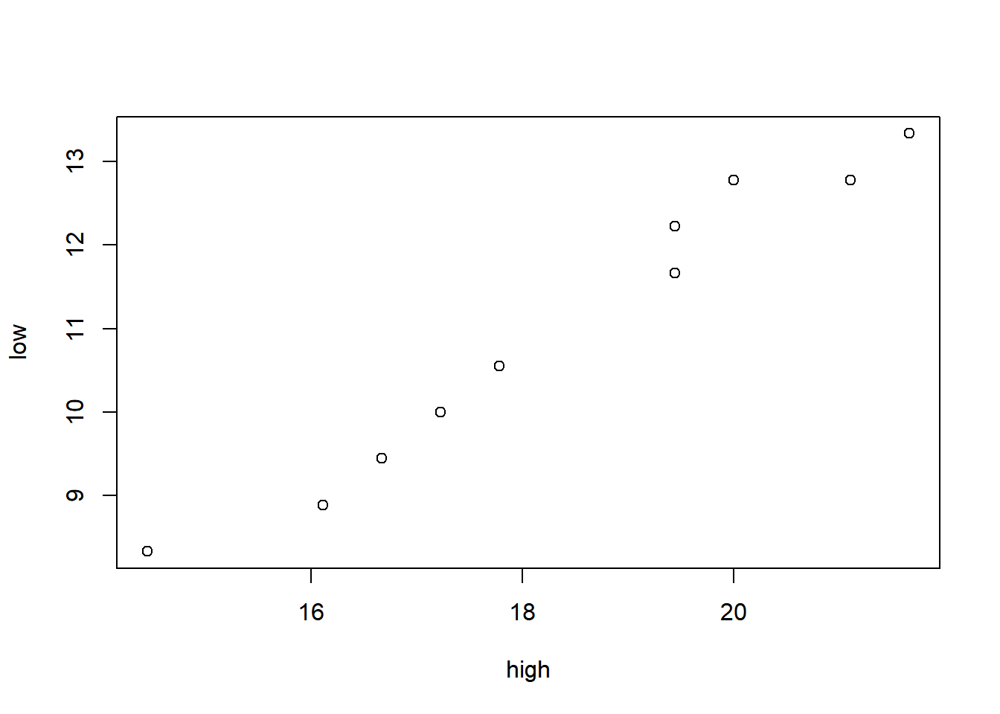
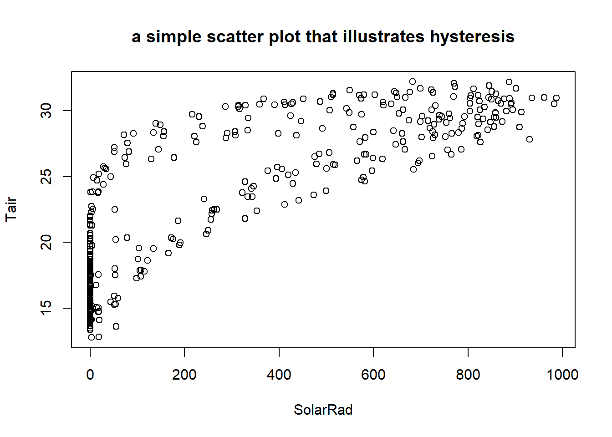

8 Modeling in R
under construction
8.1 Some common statistical models
lm(y ~ x)linear regressionlm(y ~ x1 + x2 + x3)multiple regressionglm(y ~ x, family = poisson)generalized linear model, poisson distribution; see ?family to see those supported, including binomial, gaussian, poisson, etc.aov(y ~ x)analysis of variance (same as lm except in the summary)- gam(y ~ x) generalized additive models
- tree(y ~ x) or rpart(y ~ x) regression/classification trees
model1 <- lm(TEMPERATURE ~ ELEVATION, data = sierraFeb)
summary(model1)##
## Call:
## lm(formula = TEMPERATURE ~ ELEVATION, data = sierraFeb)
##
## Residuals:
## Min 1Q Median 3Q Max
## -2.9126 -1.0466 -0.0027 0.7940 4.5327
##
## Coefficients:
## Estimate Std. Error t value Pr(>|t|)
## (Intercept) 11.8813804 0.3825302 31.06 <2e-16 ***
## ELEVATION -0.0061018 0.0002968 -20.56 <2e-16 ***
## ---
## Signif. codes: 0 '***' 0.001 '**' 0.01 '*' 0.05 '.' 0.1 ' ' 1
##
## Residual standard error: 1.533 on 60 degrees of freedom
## Multiple R-squared: 0.8757, Adjusted R-squared: 0.8736
## F-statistic: 422.6 on 1 and 60 DF, p-value: < 2.2e-16Probably the most important statistic is the p value for the predictor variable ELEVATION, which in this case is very small <2e-16.

##
## Call:
## lm(formula = TEMPERATURE ~ ELEVATION, data = sierraFeb)
##
## Coefficients:
## (Intercept) ELEVATION
## 11.881380 -0.006102Making Predictions
eqn## [1] "temperature = 11.88 + -0.006*elevation + e"a <- model1$coefficients[1]
b <- model1$coefficients[2]
elevations <- c(500, 1000, 1500, 2000)
elevations## [1] 500 1000 1500 2000tempEstimate <- a + b * elevations
tempEstimate## [1] 8.8304692 5.7795580 2.7286468 -0.32226458.1.1 Analysis of Covariance
Same purpose as Analysis of Variance, but also takes into account the influence of other variables called covariates. In a way, combines a linear model with an analysis of variance.
“Are water samples from streams draining sandstone, limestone, and shale different based on pH, while taking into account elevation?”
Response variable is modeled from the factor (ANOVA) plus the covariate (regression)
- ANOVA: pH ~ rocktype
- Regression: pH ~ elevation
- ANCOVA: pH ~ rocktype + elevation
- Yet shouldn’t involve interaction between rocktype and elevation
Example: stream types distinguished by discharge and slope
Three common river types are meandering, braided and anastomosed. For each, their slope varies by bankfull discharge in a relationship that looks something like:

No interaction between covariate and factor
- No relationship between discharge and channel type.
- Another interpretation: the slope of the relationship between the covariate and response variable is about the same for each group; only the intercept differs. Assumes parallel slopes.
log10(S) ~ strtype * log10(Q) … interaction between covariate and factor
log10(S) ~ strtype + log10(Q) … no interaction, parallel slopes
If models are not significantly different, remove interaction term due to parsimony, and satisfies this ANCOVA requirement.
library(tidyverse)
csvPath <- system.file("extdata","streams.csv", package="iGIScData")
streams <- read_csv(csvPath)
streams$strtype <- factor(streams$type, labels=c("Anastomosing","Braided","Meandering"))
summary(streams)## type Q S strtype
## Length:41 Min. : 6 Min. :0.000011 Anastomosing: 8
## Class :character 1st Qu.: 15 1st Qu.:0.000100 Braided :12
## Mode :character Median : 40 Median :0.000700 Meandering :21
## Mean : 4159 Mean :0.001737
## 3rd Qu.: 550 3rd Qu.:0.002800
## Max. :100000 Max. :0.009500ggplot(streams, aes(Q, S, color=strtype)) +
geom_point()
library(scales) # needed for the trans_format function below
ggplot(streams, aes(Q, S, color=strtype)) +
geom_point() + geom_smooth(method="lm", se = FALSE) +
scale_x_continuous(trans=log10_trans(),
labels = trans_format("log10", math_format(10^.x))) +
scale_y_continuous(trans=log10_trans(),
labels = trans_format("log10", math_format(10^.x)))
ancova = lm(log10(S)~strtype*log10(Q), data=streams)
summary(ancova)##
## Call:
## lm(formula = log10(S) ~ strtype * log10(Q), data = streams)
##
## Residuals:
## Min 1Q Median 3Q Max
## -0.63636 -0.13903 -0.00032 0.12652 0.60750
##
## Coefficients:
## Estimate Std. Error t value Pr(>|t|)
## (Intercept) -3.91819 0.31094 -12.601 1.45e-14 ***
## strtypeBraided 2.20085 0.35383 6.220 3.96e-07 ***
## strtypeMeandering 1.63479 0.33153 4.931 1.98e-05 ***
## log10(Q) -0.43537 0.18073 -2.409 0.0214 *
## strtypeBraided:log10(Q) -0.01488 0.19102 -0.078 0.9384
## strtypeMeandering:log10(Q) 0.05183 0.18748 0.276 0.7838
## ---
## Signif. codes: 0 '***' 0.001 '**' 0.01 '*' 0.05 '.' 0.1 ' ' 1
##
## Residual standard error: 0.2656 on 35 degrees of freedom
## Multiple R-squared: 0.9154, Adjusted R-squared: 0.9033
## F-statistic: 75.73 on 5 and 35 DF, p-value: < 2.2e-16anova(ancova)## Analysis of Variance Table
##
## Response: log10(S)
## Df Sum Sq Mean Sq F value Pr(>F)
## strtype 2 18.3914 9.1957 130.3650 < 2.2e-16 ***
## log10(Q) 1 8.2658 8.2658 117.1821 1.023e-12 ***
## strtype:log10(Q) 2 0.0511 0.0255 0.3619 0.6989
## Residuals 35 2.4688 0.0705
## ---
## Signif. codes: 0 '***' 0.001 '**' 0.01 '*' 0.05 '.' 0.1 ' ' 1# Now an additive model, which does not have that interaction
ancova2 = lm(log10(S)~strtype+log10(Q), data=streams)
anova(ancova2)## Analysis of Variance Table
##
## Response: log10(S)
## Df Sum Sq Mean Sq F value Pr(>F)
## strtype 2 18.3914 9.1957 135.02 < 2.2e-16 ***
## log10(Q) 1 8.2658 8.2658 121.37 3.07e-13 ***
## Residuals 37 2.5199 0.0681
## ---
## Signif. codes: 0 '***' 0.001 '**' 0.01 '*' 0.05 '.' 0.1 ' ' 1anova(ancova,ancova2) ## Analysis of Variance Table
##
## Model 1: log10(S) ~ strtype * log10(Q)
## Model 2: log10(S) ~ strtype + log10(Q)
## Res.Df RSS Df Sum of Sq F Pr(>F)
## 1 35 2.4688
## 2 37 2.5199 -2 -0.051051 0.3619 0.6989 # not significantly different, so model simplification is justified
# Now we remove the strtype term
ancova3 = update(ancova2, ~ . - strtype)
anova(ancova2,ancova3) ## Analysis of Variance Table
##
## Model 1: log10(S) ~ strtype + log10(Q)
## Model 2: log10(S) ~ log10(Q)
## Res.Df RSS Df Sum of Sq F Pr(>F)
## 1 37 2.5199
## 2 39 25.5099 -2 -22.99 168.78 < 2.2e-16 ***
## ---
## Signif. codes: 0 '***' 0.001 '**' 0.01 '*' 0.05 '.' 0.1 ' ' 1 # Goes too far. Removing the strtype creates a significantly different model
step(ancova)## Start: AIC=-103.2
## log10(S) ~ strtype * log10(Q)
##
## Df Sum of Sq RSS AIC
## - strtype:log10(Q) 2 0.051051 2.5199 -106.36
## <none> 2.4688 -103.20
##
## Step: AIC=-106.36
## log10(S) ~ strtype + log10(Q)
##
## Df Sum of Sq RSS AIC
## <none> 2.5199 -106.364
## - log10(Q) 1 8.2658 10.7857 -48.750
## - strtype 2 22.9901 25.5099 -15.455##
## Call:
## lm(formula = log10(S) ~ strtype + log10(Q), data = streams)
##
## Coefficients:
## (Intercept) strtypeBraided strtypeMeandering log10(Q)
## -3.9583 2.1453 1.7294 -0.4109Part of general linear model (lm)
ANOVA & ANCOVA are applications of a general linear model.
- Uses lm in R
- Response variable is continuous, assumed normally distributed
Not the same as Generalized Linear Model (GLM)
- With GLM, response variable may be from count data (e.g. Poisson), probabilities of occurrence (logistic regression) or other non-normal distributions.
mymodel = lm(log10(s) ~ strtype + log10(Q))
- The linear model, with categorical explanatory variable + covariate
anova(mymodel)
- Displays the Analysis of Variance table from the linear model
8.2 Generalized Linear Model (GLM)
The glm in R allows you to work with various types of data using various distributions, described as families such as:
- gaussian : normal distribution – what is used with lm
- binomial : logit – used with probabilities.
- Used for logistic regression
- poisson : for counts. Commonly used for species counts.
- see help(glm) for other examples
Great explanation of poisson distribution using meteor showers at:
https://towardsdatascience.com/the-poisson-distribution-and-poisson-process-explained-4e2cb17d459
8.3 Models Employing Machine Learning
under construction, to include neural network model of environmental data
8.4 Spatial Statistical Analysis
Spatial statistical analysis brings in the spatial dimension to a statistical analysis, ranging from visual analysis of patterns to specialized spatial statistical methods. There are many applications for these methods in environmental research, since spatial patterns are generally highly relevant. We might ask:
- What patterns can we see?
- What is the effect of scale?
- Relationships among variables – do they vary spatially?

8.4.1 Spatial Autocorrelation
[Need to add a Moran’s I section here]
8.4.2 Mapping Residuals
If the residuals from regression are spatially autocorrelated, look for patterns in the residuals to find other explanatory variables.
library(tidyverse)
library(iGIScData)
library(sf); library(raster)
rasPath <- system.file("extdata", "ca_hillsh_WGS84.tif", package="iGIScData")
hillsh <- raster(rasPath)
hillshpts <- as.data.frame(rasterToPoints(hillsh))
CAbasemap <- ggplot() +
geom_raster(aes(x=x, y=y, fill=ca_hillsh_WGS84), hillshpts) + guides(fill=F) +
geom_sf(data=CA_counties, fill=NA) +
scale_fill_gradient(low = "#606060", high = "#FFFFFF") +
labs(x='', y='')
sierra <- st_as_sf(filter(sierraFeb, !is.na(TEMPERATURE)), coords=c("LONGITUDE", "LATITUDE"), crs=4326)
model1 <- lm(TEMPERATURE ~ ELEVATION, data = sierra)
cc <- model1$coefficients
sierra$resid <- resid(model1)
sierra$predict <- predict(model1)
eqn = paste("temperature =", paste(round(cc[1],2), paste(round(cc[-1], digits=3), sep="*", collapse=" + ", paste("elevation")), sep=" + "), "+ e")
ct <- st_read(system.file("extdata","CA_places.shp",package="iGIScData"))
ct$AREANAME_pad <- paste0(str_replace_all(ct$AREANAME, '[A-Za-z]',' '), ct$AREANAME)
bounds <- st_bbox(sierra)
sierrabasemap <- CAbasemap +
geom_sf(data=ct) +
geom_sf_text(mapping = aes(label=AREANAME_pad), data=ct, size = 2, nudge_x = 0.1, nudge_y = 0.1) +
coord_sf(xlim = c(bounds[1], bounds[3]), ylim = c(bounds[2],bounds[4]))
sierrabasemap +
geom_sf(mapping = aes(color = resid), alpha=0.7, data=sierra, size=2.5) +
scale_color_gradient2(low="blue", mid="ivory2", high="red",
midpoint=mean(sierra$resid)) +
coord_sf(xlim = c(bounds[1], bounds[3]), ylim = c(bounds[2],bounds[4])) +
labs(title="Residuals", subtitle=eqn) + theme(legend.position = c(0.8, 0.85)) +
theme(legend.key.size = unit(0.4, 'cm'),
legend.title = element_text(size=8))